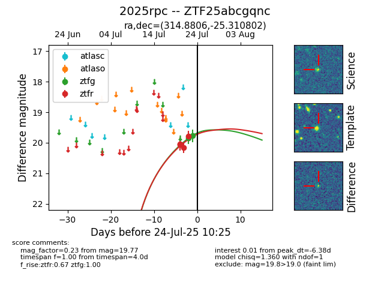

Target 2025rpc at 2025-07-24 10:25, see:
FINK: fink-portal.org/2025rpc
Lasair: lasair-ztf.lsst.ac.uk/objects/2025rpc
ALeRCE: alerce.online/object/2025rpc
TNS: wis-tns.org/object/2025rpc
YSE: ziggy.ucolick.org/yse/transient_detail/2025rpc
alt names
ZTF25abcgqnc (ztf,fink)
2025rpc (tns,yse)
coordinates:
equatorial (ra, dec) = (314.8806,-25.31080)
galactic (l, b) = (21.0026,-38.42901)
photometry
last ztfg=19.77, ztfr=19.78
2 ztfg, 4 ztfr detections
